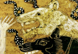

The Afterlife in Virgil
One of the most detailed and important accounts of the underworld in ancient literature is given by the Latin poet Virgil, in book six of his Aeneid. This poem was written at the end of the first-century B.C.E. His story owes much to the story of Odysseus’ descent into the underworld in book 11 of the Odyssey which we discussed above. Once again, a wandering hero, this time Aeneas, descends to the underworld. Aeneas is the Trojan warrior, the son of Anchises and Aphrodite, who after the sack of Troy takes his companions and travels to Italy, where his ancestors later found Rome.
Aeneas goes into the underworld to see his father Anchises. In order to descend into the underworld, Aeneas must get a golden bough which is sacred to Persephone, and also bury his comrade Misenus. Aeneas is aided in entering the underworld by the Sibyl, the prophetess of Apollo at Cumae. He approaches the underworld and descends on a journey. Whereas in the Odyssey it was not clear whether Odysseus actually moves from the spot at which he makes the sacrifice, the actual journey of Aeneas into the underworld is graphically described; Aeneas descends along a dark road, past many terrors until he comes to the lake Acheron which one must cross to enter Hades. Those who have been unburied must remain on the banks of Acheron. Here it is made explicit by Virgil what was implied in the earlier descent of Odysseus into the underworld; those who are not buried are not actually allowed to cross into the realm of the dead, but must wait in between two worlds until they are buried.
Aeneas descent into the underworld is littered with terrible beasts. One such beast is Cerberus, the guardian dog of the underworld (which inspired J. K. Rowling’s Cerberus in Harry Potter). We will see when we look at Heracles, that one myth describes him descending to the underworld where he defeats Cerberus (see image 1). Once Aeneas has passed by this great beast, he is in the underworld. An important distinction between the account of the underworld given by Virgil and that given by Homer in the Odyssey is that, with some similarity to the conception of the afterlife in Plato’s myth of Er, Virgil makes it clear that there are different fates in the underworld. First, there is Tartarus, a terrifying fortress which holds great sinners such as Tantalus and Sisyphus, whom we discussed earlier. Another of these great sinners described by Virgil is Tityus, whose body is stretched across nine acres as a bird eats away his liver (which continuously regenerates to allow the punishment to continue eternally). Tityus is punished in this way for having assaulted Leto. But, importantly, it is not only those who have sinned against the gods who are punished in Tartarus, but also the common man who has lived an evil life. Tartarus also houses those people who have sinned against fellow humans, those who hated their brothers and harmed their relatives. On the other hand, there is a very pleasant place for those who have lived a good life, the fields of Elysium mentioned above. In Virgil, all humans go to the underworld, but there is more differentiation in their fates once they get there.
{kind=link}
I mentioned above how Virgil’s conception of the underworld greatly influenced the later Christian descriptions of Hell by Dante and Milton. Let me close by giving you and excerpt from such a description in Milton’s Paradise Lost, in which you will be able to spot many Classical motifs and allusions.
"… About her middle round
A cry of Hell-hounds never-ceasing barked
With wide Cerberean mouths full loud, and rung
A hideous peal; yet, when they list, would creep,
If aught disturbed their noise, into her womb,
And kennel there; yet there still barked and howled
Within unseen. Far less abhorred than these
Vexed Scylla, bathing in the sea that parts
Calabria from the hoarse Trinacrian shore;
Nor uglier follow the night-hag, when, called
In secret, riding through the air she comes,
Lured with the smell of infant blood, to dance
With Lapland witches, while the labouring moon
Eclipses at their charms."
John Milton, Paradise Lost (1667), Book II, ll.613-26.